Generating-input.Rmdlist of dataset pairs
MultiQC HTML report with QC info on the input fastqs, trimming, mapping, and deduplication steps..vcf file with variants from all samples (FreeBayes mutation caller).vcf file with variants from all samples (MiModD mutation caller).gff file with deletions from all samples (MiModD deletion calling tool)MutantSets or alternatively the MiModD VCF Filter or SnpSift Filter tools to identify candidate variants.MiModD NacreousMap for visualisation of mutation locations and MiModD Report Variants for HTML mutation listNB samples are expected to be of the form ‘A123_0001_S1_R1_L001.fq.gz’, sample Identifiers are extracted from this with a regular expression: \w+_(\d+)_S\d+_L\d+.*. This would yield the sample identifier of: 0001. If your file does not conform to this pattern you may need to update this regex by editing the rules in the ‘apply rule to collection’ step of the workflow.
Doitsidou et al. reviewed Sequencing-Based Approaches for Mutation Mapping and Identification in C. elegans (Doitsidou, Jarriault, and Poole 2016). They describe three main approaches to mapping by sequencing:
This pipeline is currently only compatible with 2 of them, EMS-density mapping & Variant discovery mapping (VDM).
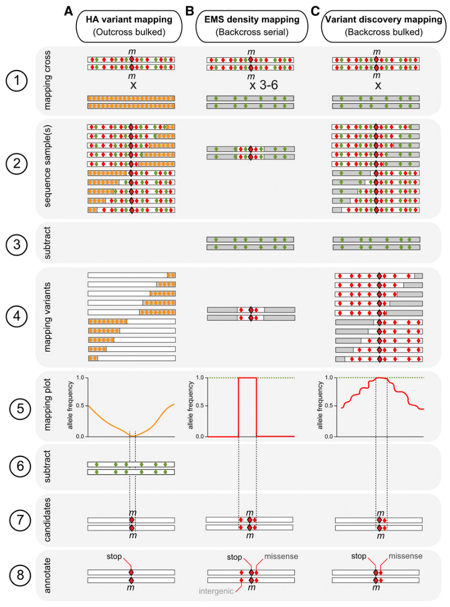
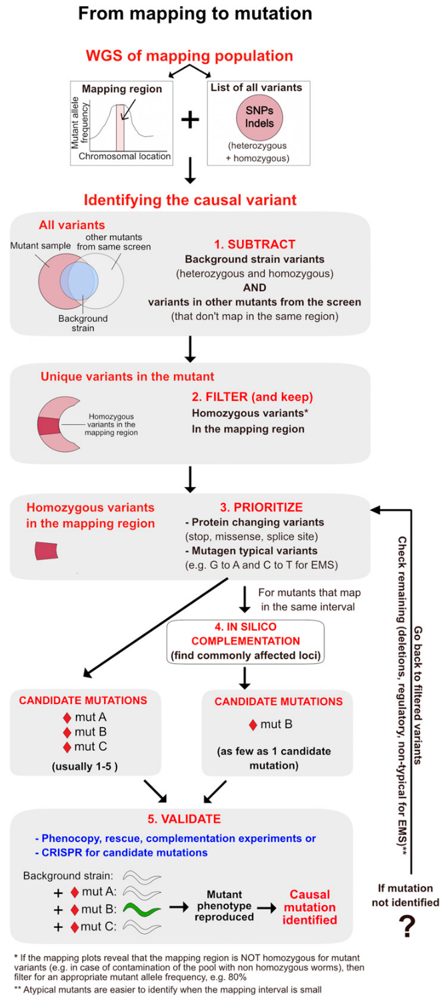
The Schumacher lab identified a need for an analysis pipeline to map and identify mutations in Ethyl methanesulfonate (EMS) mutagenesis forward genetic screens.
Previously a tool called CloudMap (Minevich et al. 2012) had been used for this purpose on a Galaxy server. CloundMap is no longer under active development and has been deprecated from Galaxy Europe and replaced by MiModD Docs
In a comparison of C. elegans mutation calling pipelines Smith et al. (Smith and Yun 2017) indicated that they had good results with the FreeBayes (Garrison and Marth 2012). So I have initially included this tool here in addition to theMiModD mutation caller to evaluate their relative performance. They also found the the BBMap aligner yielded better results however this is not available in Galaxy so I have opted for Bowtie2 for expediency.
https://usegalaxy.eu/u/richardjacton/w/c-elegans-ems-mutagenesis-mutation-caller
fastp (Chen et al. 2018)
bowtie2 --sensitive-local (Langmead and Salzberg 2012)
samtools view requiring that reads are mapped in a proper pair (Li et al. 2009)
Picard MarkDuplicates (“Picard Toolkit” 2019)
FreeBayes (Garrison and Marth 2012)
MultiQC aggregating quality metrics from trimming, deduplication and alignment (Ewels et al. 2016)
FreeBayes (Garrison and Marth 2012), MiModD (“MiModD” 2013) variant caller and deletion callerSnfEff eff (Cingolani et al. 2012)
SnpSift Variant Type (Cingolani et al. 2012)
1. Upload Data to galaxy
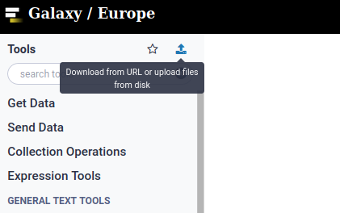
2. Select all fastq files and create a paired list
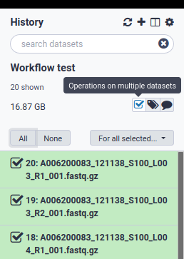
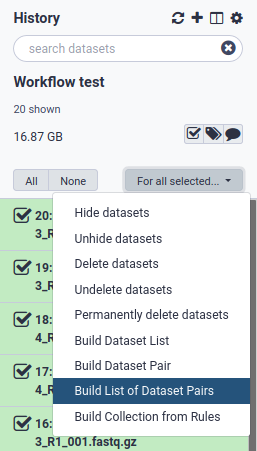
3. Pair the fastq files
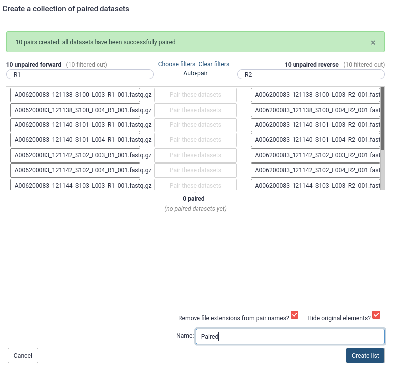
4. Import the workflow
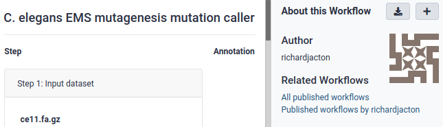
5. Run the workflow
Select the paired list object and a genome sequence file as inputs
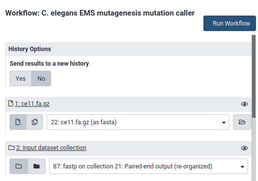
6. Check Quality Control Information
Inspect the MultiQC output for signs of technical problems with your data. Consult with your friendly local bioinformatician if there are QC issues you can’t diagnose.
7. Preliminary quality filtering SnpSift filter
Locate the SnpSift filter tool in the galaxy tools panel and apply some initial quality filters, simply ( QUAL > 15) or 20 is probably sufficient. Starting with a low stringency filter and applying more stringent criteria when inspecting your candidate mutations it is probably advisable to avoid throwing out possible mutations. Some initial filtering is advisable as the full-sized VCF files may be too large to be easily read by the candidate mutant inspection tool in the next steps. You can check how many lines are in your VCF files by selecting them in the Galaxy history.
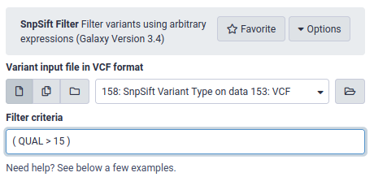
8. Download Data
The main FreeBayes VCF file:
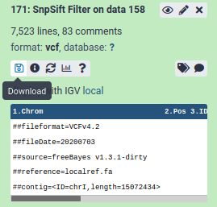
The MiModD deletion calls:
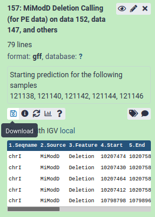
9. Load the results in the MutantSets Shiny App to identify candidate mutations
If running the App locally, install the R package from: https://github.com/RichardJActon/MutantSets
R package installation and running the app locally:
# install.packages("remotes") # If you don't already have remotes/devtools
# remotes::install_github("knausb/vcfR") # If vcfR fails to install from CRAN
remotes::install_github("RichardJActon/MutantSets")
MutantSets::launchApp() # opens the app in a web browserMutantSets
.tsv file (openable in excel)You should now have some candidate mutants to screen - Good Luck!
Please direct bug reports, feature requests, and questions to the maintainer of the mutant sets package via [github issues](https://github.com/RichardJActon/MutantSets/issues.